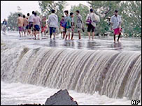

|
|
||||
|
A petition from Mukto-mona:  Please Initiate Bilateral Talks for the River Interlinking Project
To: The Prime Minister of Govt. of India Your
Excellency Mukto-Mona, an assembly of freethinkers and humanists mostly from Bengali descent in the Internet, voices up apprehension on the conception of River Interlinking Project as envisaged by Indian Water Development Agency. With the implementation of such project, which requires the withdrawal of water from their natural courses and common rivers, we believe that it would greatly harm not only the delicate ecology of Bangladesh (as well as neighboring Indian states such as West Bengal, Assam etc.) but also its economy and put millions of people’s life at risk. It is obvious that diversion of water from the rivers such as the Ganges and the Brahmaputra upriver would drastically affect the agriculture of the land in the dry season in particular in downriver areas. Further to this adversity, interlinking of rivers project is likely in some or other way to destroy UNESCO world heritage sites in Bangladesh and Indian state of West Bengal such as Sundarbans (an indigenous forests nurturing flora and fauna) at the lower delta region, Paharpur Buddha Vihara and the historic mosque city of Bagerhat, etc. Also, because of the River Interlinking Project in India, salinity will creep up in the deltaic land all over the southern part of Bangladesh damaging agriculture. The long-term effect of such increase in salinity will surely wreak havoc among Bangladeshi folks living in the coastal area because this will also impact fisheries, which provides livelihood to many poor folks in that region of Bangladesh. We hereby strongly suggest that the Task Force for the River Interlinking Project should initiate bilateral talks with the expert groups of Bangladesh before undertaking such huge project. In this regard, we also hope that government of India would respect all the relevant international laws [the U.N Water Convention (1997), Biodiversity Convention (1992) and Helsinki Rules (1966) etc.] pertaining to the use of water from the common rivers and other conventions on bio-diversities. Your Excellency, we would like to request you to command over the task force to provide guarantee that our concerns shall be addressed and resolved. No project is so important that threatens the livelihood, environment and heritage of West Bengal, Assam and a neighboring country such as Bangladesh. Please preserve the delicate balance of nature. While interlinking rivers in India may make sense from Indian perspective, it does not bode well for the people Bangladesh. Let good sense prevail. Nip this ill-conceived project in the bud and save humanity.
Sincerely,
[The Please Initiate Bilateral Talks for the River Interlinking Project Petition to The Prime Minister of Govt. of India was created by Swapan K. Biswas (on behalf of Mukto-mona) and written by The members of Advisory board of Mukto-mona.. This petition is hosted here at www.mukto-mona.com ]
References: http://bangladesh-web.com/news/sep/06/g06092003.htm#A4 (Petition news) http://www.thedailystar.net/2003/09/08/d30908110172.htm (Petition news) http://independent-bangladesh.com/news/sep/09/09092003lt.htm#A2 (Petition news) http://www.bangladeshobserveronline.com/new/2003/09/18/ltte.htm (Petition news) http://www.thedailystar.net/2003/08/27/d30827020524.htm http://news.bbc.co.uk/2/hi/south_asia/3050485.stm http://news.bbc.co.uk/2/hi/south_asia/3148355.stm http://news.bbc.co.uk/1/hi/world/south_asia/3151809.stm http://www.guardian.co.uk/india/story/0,12559,1004788,00.html http://in.news.yahoo.com/030813/43/26v19.html http://in.news.yahoo.com/030804/139/26l4c.html http://www.enn.com/news/2003-08-08/s_7333.asp http://nation.ittefaq.com/artman/publish/article_4026.shtml http://nation.ittefaq.com/artman/publish/article_3996.shtml http://www.e-mela.com/Bangladesh/bachaoGanga_Mizan_jaijaidin20030812.pdf (Bangla) http://www.prothom-alo.net/newhtmlnews/category.php?CategoryID=1&Date=2003-09-02&filename=02h1 (Bangla) etc. |
||||